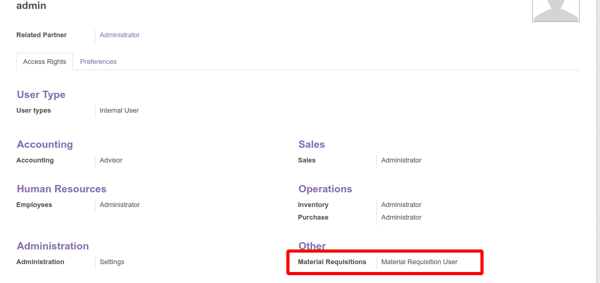
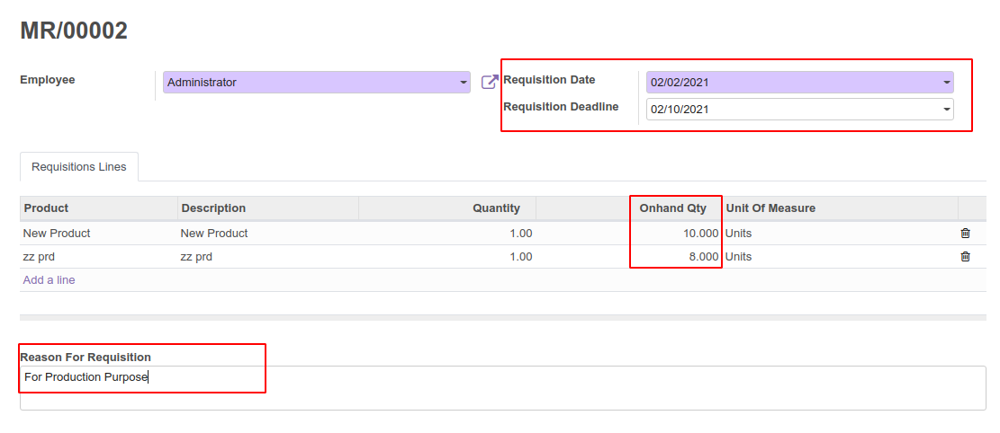
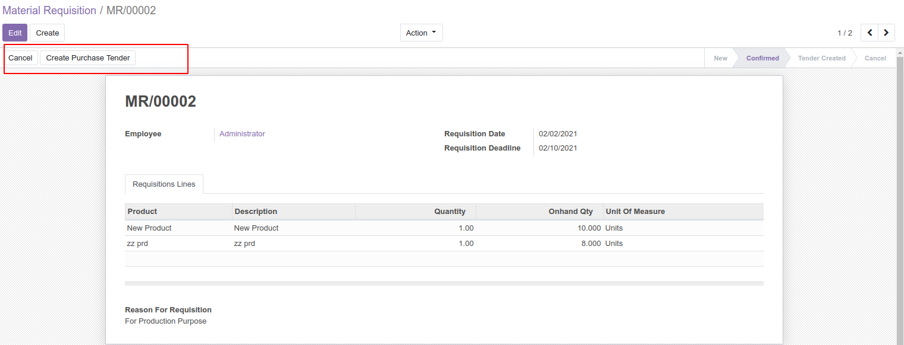
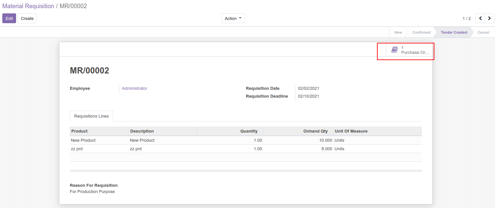
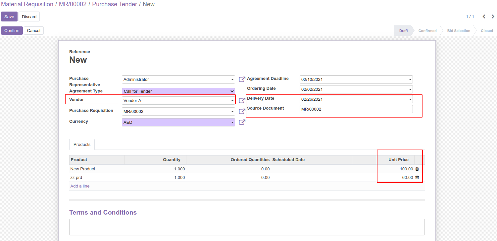
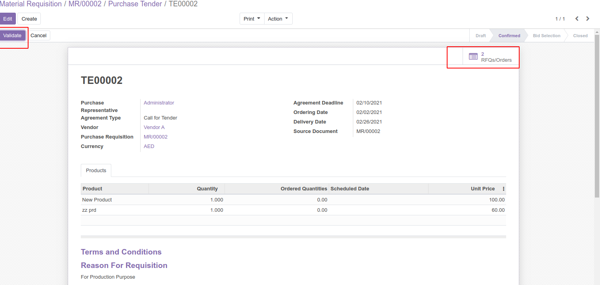
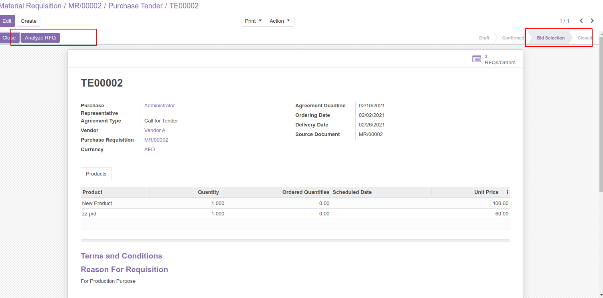
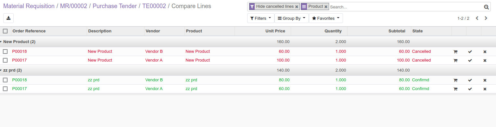

HOW TO USE THIS MODULE

Once we install material requisition module , in settings set the access to the user to use this particular module.
Select the material requisition user in order to access the requisition menu.

After setting the access we get a menu for Requisition and clicking on the menu will open a requisition form, here you need to specify
the materials required and the details such as requisition date, deadline etc. In the requisition lines, more than one products can be
requested. You can also mention the reason for requesting the items. Finally you can make confirmation by clicking the confirm button.
.

After confirming, A Create Purchase Tender button will be visible, the basic functionality of this button is to create a purchase tender
and to move to the request to the next stage as Tender Created.You can even cancel the request from this state.

Once the tender is created you get the smart button to access the tenders from the material requisition form.

A new purchase tender is created, which replicates of all the information mentioned in the Material Requisition form.
Here the vendor name and the expected delivery date can be specified.

After the tender confirmation, its possible to create the RFQ in order to get prices from one or more than one suppliers.

After sending the RFQ to different suppliers , you can compare the prices send by different suppliers by validating the tender
and by clicking on the Analyse RFQ button. This will move the state of tender to Bid Selection.

In Bid Selection state, it provides a comparable tree view, where one can compare the prices and select the best offer.
Another excellent feature is that we also have option to add the quantity, accept the offer or reject from the same screen
with help of smart buttons in the right side of the view.
Here we can confirm the orders that is accepted and cancel the orders which is rejected.
Finally after the comparison, best offer will be selected and will be proceeded to make the LPO and to receive the items in the inventory.
Once the LPO is generated the tender can be marked as closed.